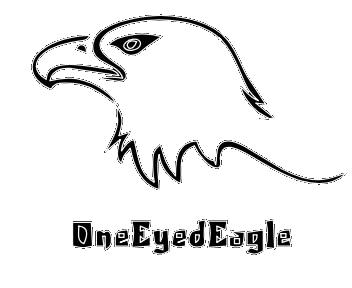

这里按时间顺序展示老鹰已发布的作品。
|  |
|
这里摆放一些链接！
我自己的RGSS3代码仓库， 分享允许自由使用的插件。 |
|
我的作品索引列表， 有补链，还有更详细的制作感言。 |
|
葱兔菊苣的RM作品列表， 欢迎去探索。 |
2014年8月
极短篇
纯追逐战
试水作
无剧情
控制主角，在一间大房子中不断尝试，找齐三把钥匙，然后从花园上方的正门逃出去；分三种难度。
2014年8月
极短篇
地图战斗
试水作
搞怪向
你是一名勇者，你此刻在酒馆里，神马！你又要欠账了！这怎么可以呢？等着，我就去清了魔物，拿它们的肝脏换的钱来结账！
已停止公开
2014年9月
短篇
探索解谜
无恐怖
BL
夜半，帕斯特从噩梦中醒来，却发现找不到卡尔了，管家急匆匆赶了进来，却说卡尔现在正在地下酒窖，真是奇怪。途中所看到的家中一件件物什，都充盈着两人共同的回忆，一切都是美好的……
2014年12月
极短篇
试水作
正剧
在一场两国大战的前线中，队长忽的在炮弹掉落前压在了两名士兵身上，再醒来，却发觉自己在一间古怪的房内，没有了战争的硝烟，没有了一同战斗的士兵……
已停止公开
2015年2月
短篇
探索解谜
微恐怖
GL
在周围突然疯一般流行起来的日落归仪式，越来越多的失踪不见的人，直至最好的朋友也在留下一句“我去调查看看这个”后也失踪不见，少女遵循着占卜屋的引导，踏上了一个人的探索与寻找之旅。
2015年9月
短篇
伪恐怖
治愈向
BG
传闻说太多谎的人就会被抓入进谎言之屋，少年在一步步寻找脱出方法的过程中遇到了不能说话的女生与自己前桌的同学，而就在看似脱出的大门之后，谁也不知，谁的“谎言”早已成真……
2015年11月
极短篇
探索向
萌即正义
小女孩在自己的床上醒了过来，但总觉得房间里肯定有奇怪的让人在意的地方！时间还早，就在15分钟内找出来！不然肚子就要饿扁了……
2016年1月
极短篇
微恐怖
负能量
生活一切都是那么糟糕，酒醒后又到了晚上，一直以来的怪事，在这个晚上就要全部展开……
2016年2月
极短篇
番外
GL
日落归是假的，可是日落归中的隐世居然是真的！在尤雪的死缠烂打下，水岚终于承认了这一切。在新年伊始，水岚碰巧发现了可能的再次见到云烟的办法……
2016年3月
短篇
现实虐心
BL
一次车祸，似乎将一切都搅得一团糟；学生会换届酒宴离去，下意识中居然又一次回到了他的公寓里：（黑线）因忘记拔出钥匙而遭遇恶作剧般的反锁，现下也只能找出备用钥匙开门离去了；（白线）屋内一切都入未曾变动一般，四处却充斥着二人共同的记忆。
2016年5月
极短篇
R剧
略手残向
Fidelis大陆上，魔法元素逐渐稀缺，而为了自己的信念持之以恒的法师们，正编写出一个个属于自己的冒险故事。新搬家后的魔王苦等勇者而不至，遂决定让手下去附近的镇子找找，当然，都是闹得一团糟。
2016年7月
极短篇
纯文字
探索向
终于，杀掉了讨人厌的前女友，她再也不能来烦自己了……接下来，就是赶紧把自己，从这个犯罪现场中脱离出去；会有完美的犯罪现场？一切的完美，都只是我们还未挖掘出潜藏的联系。
2016年8月
短篇
探索解谜
治愈
GL
脑海中一直回荡的旋律，以前的记忆逐渐忘却。必须面对的，不能逃避。而在自己的家中所遇到的神秘少女，仿佛熟知过往的一切。
2016年11月
极短篇
文字AVG
日轻风
狂气
醒了？那就快点开始我们这一次的实验吧。唔，知道你不想再听一遍枯燥的背景了，那么我就再将重点内容介绍一遍吧……
2016年12月
极短篇
Lifeline式
纯文字
你翻开了从古董堆中找到的一本牛皮书，它仿佛有一种魔力能让你不自觉地拿起笔，在书页上画下诡异符文，更令人惊讶的是，随后书上逐渐显露出不知道是谁的心声……
2017年4月
极短篇
地图ARPG
公益
每时每刻，都要与周围人不经意流露出的恶意做抗争，真的很累，可仍然不能放弃吧。
2017年8月
短篇
JRPG
BL
谨以本作致敬Glimmer 系列
Fidelis / 信念之地 —— 物是人非，唯留心底信念，如漫天辰星，从未消逝，指明前方。
Tilting the Balance —— 我愿立于倾斜天平的高侧，增添一毫的重量。
2018年7月
极短篇
一场战斗
BL
Fidelis / 信念之地 —— 百年守护，与汝最后的约定。
Mega Origin / 魔法本源 —— 摈弃一切，也愿守护这不完美的世界。
2019年3月
极短篇
纯文字
BL
Fidelis / 信念之地 —— 信念，将指引人创造出不可思议的奇迹。
Alchemy and Records / 炼金与记录 —— 我的记录，便是要让更多人不再因自身的局限而迷茫无措。
2019年4月
AVG
无倾向
反讽
是还在测试阶段的思维冲击系统？我早就想试试看了，放心，不会对他造成任何副作用的，只要调整好各种参数……最后，一定能成功对他进行洗脑……
2020年5月
探索解谜
战斗
平淡温馨
女性主角
忽然出现的几起少女昏迷事件，调查后发现她们均到过公园旁边的弱水湖。“道法自然”玄学研究事务所接受委托进行调查，于是水岚带着冰镜当夜来到了湖边查探，不料遇到了“记忆城堡”……
2020年11月
AVG
无倾向
序章
已经被定案为意外的大火，唯一的幸存者却存在奇怪的行为。好友作为吃饱了没事（划去，正直热血好青年，请求我给幸存者做心理辅导，借机了解火灾背后被隐藏的事实。
没有东西哎——
因为研究生差点延毕，还被诈骗几次，一整年的状态都非常不好。
2022年8月
AVG
温馨
欢乐
本馆收藏各类人生图书，提供免费编辑功能，帮助您放下心中执念，早日开启来生。
2023年5月
AVG
日轻
欢乐
中二的我在梦里被选中拯救大家？！
最后，感谢你的一路陪伴，无论一年还是一天，鞠躬~
如果想联系我——